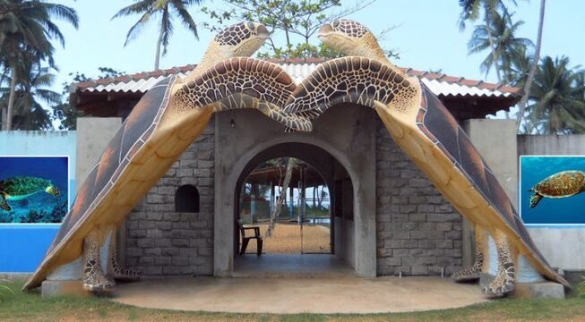
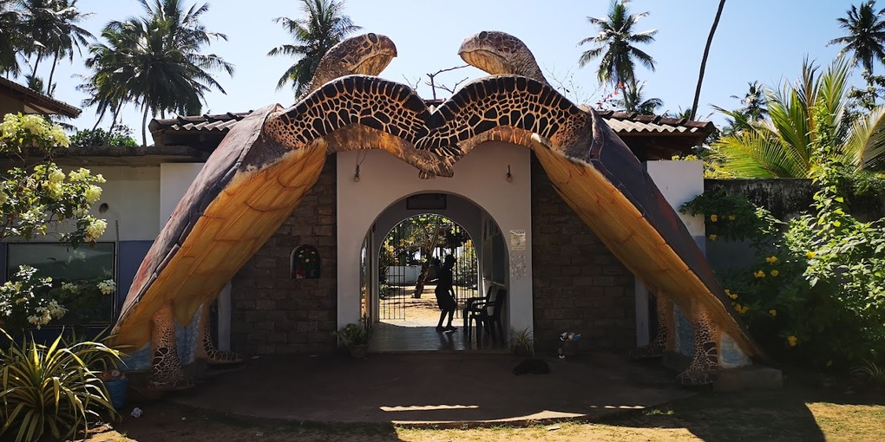
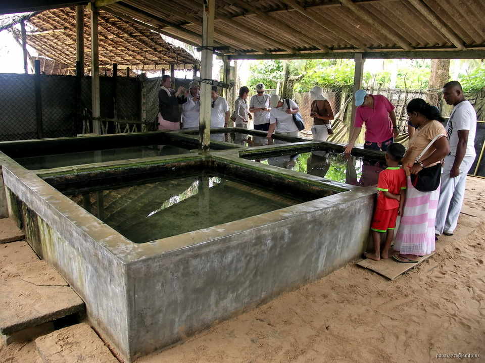
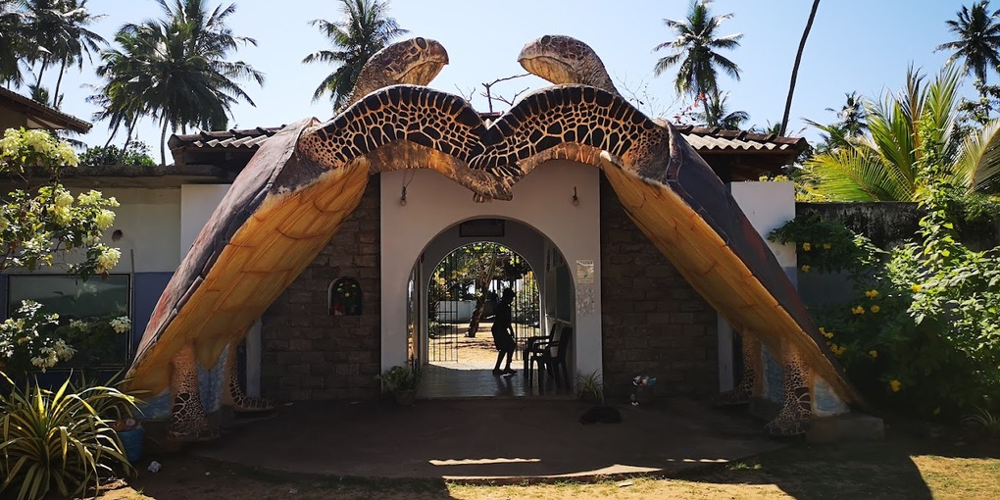
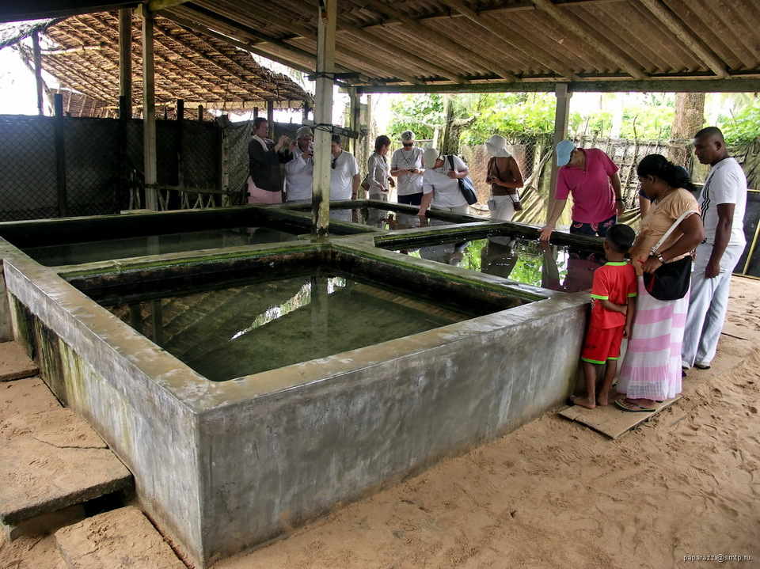
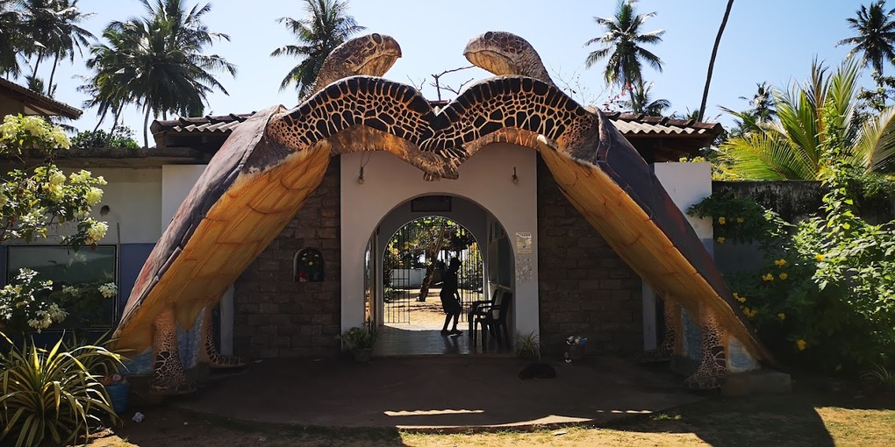
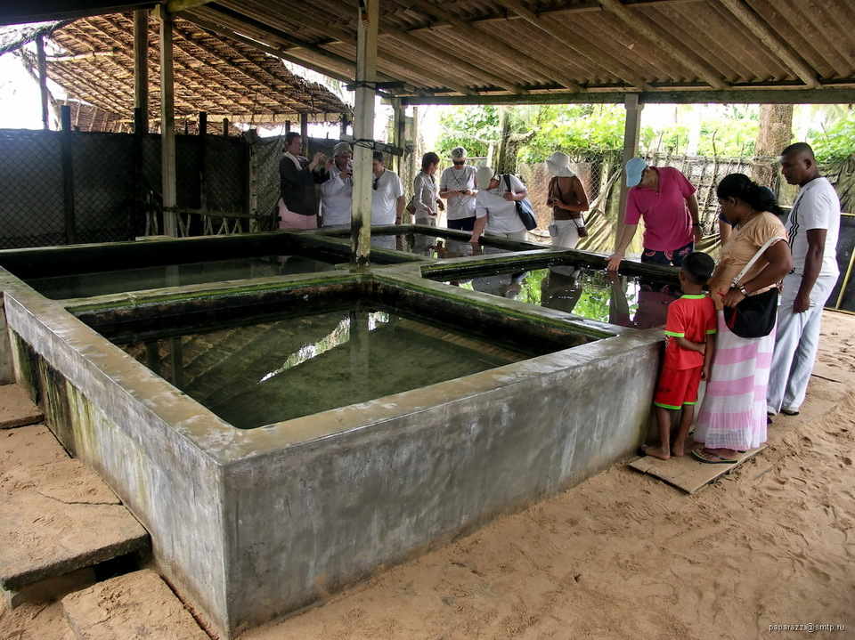
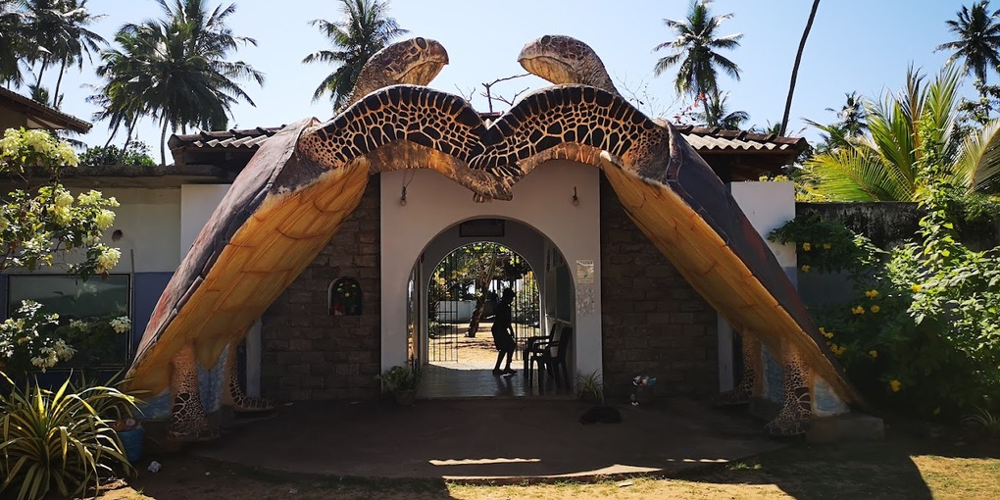
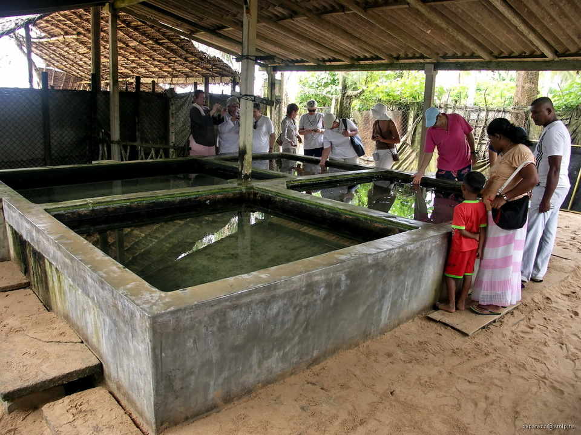

 





Location:Kosgoda, a seaside town in Sri Lanka, is home to the Kosgoda Turtle Hatchery, which is well-known for its work in sea turtle conservation.
Mission:The hatchery's main goals are to save sea turtles, preserve their nesting grounds, and increase public understanding of the value.
Establishment:This was formed in the late 1980s with a goal of protecting sea turtles.


Public Education programs:The hatchery regularly hosts educational events to inform residents and visitors about sea turtle conservation and the value of preserving their breeding grounds.
Opportunities for Volunteers: The hatchery provides volunteer programs that let people from all around the world take part in conservation efforts for sea turtles, such nest inspection, hatching release, and habitat improvement.
Workshops & School Visits: The hatchery arranges workshops and school visits for students to learn about the biology of sea turtles, their nesting habits, and conservation activities.
Nest Protection:Implementing strategies to locate and safeguard sea turtle nests against exploitation and interference by people.
Nest Excavation and relocation:Sea turtle nests should be carefully dismantled and relocated to safe hatcheries for increased protection.
Controlled hatchling releases:These are carried out to increase survival rates and reduce predatory dangers.

We, Nimo Turtle Care are dedicated to providing a seamless and inclusive experience for tourists visiting Sri Lanka , ensuring easy and convenient access to the enchanting world of the turtle hatcheries .
Make sure to always follow us back on our Social Media